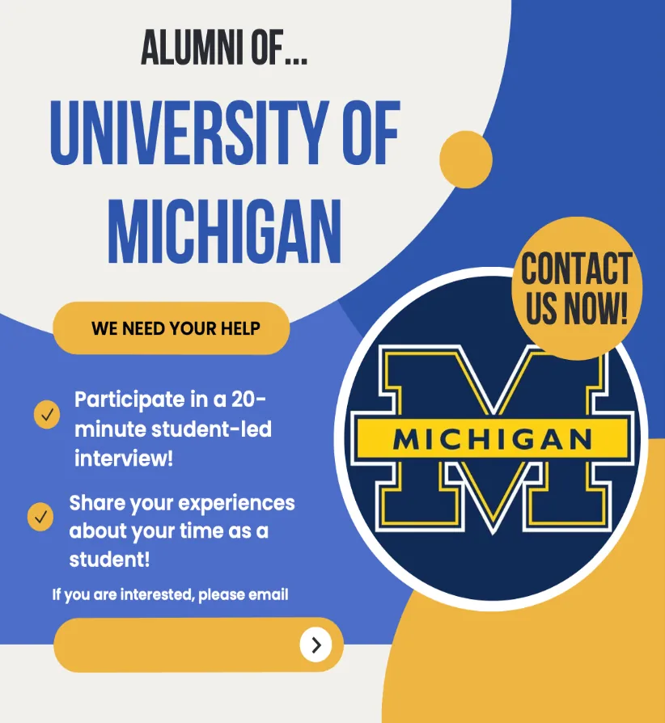
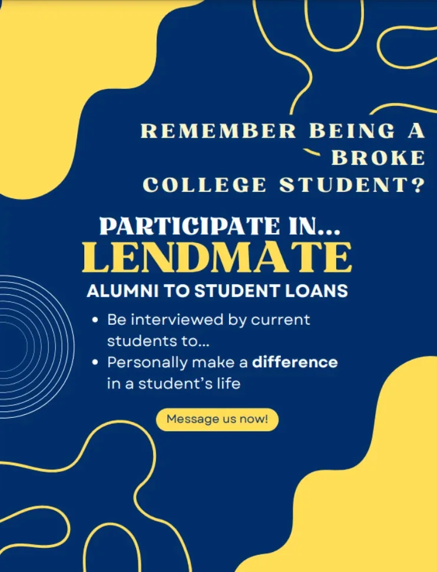
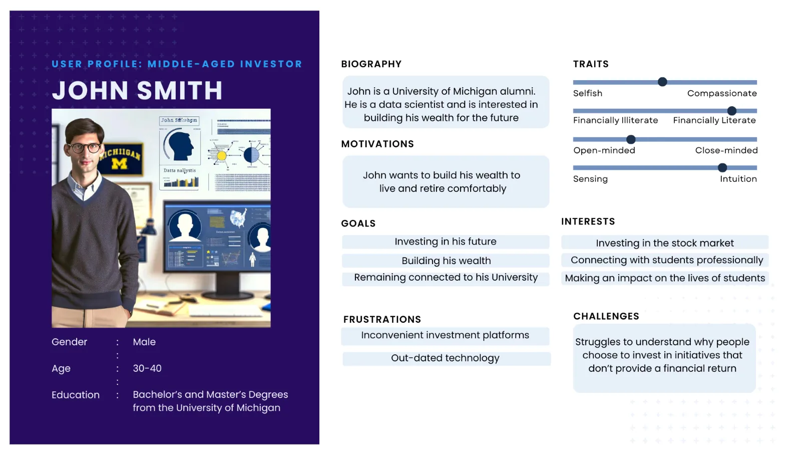
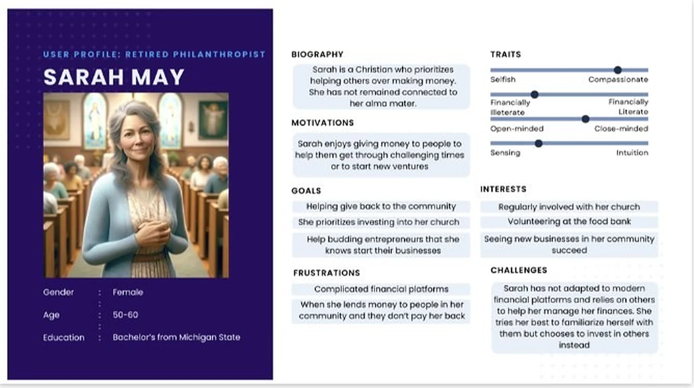

the middle-aged investor
Financially established and engaged with the university. Motivated by return, credibility and building a legacy. Thinks in portfolios, so LendMate has to feel structured and trustworthy.
Before a lending platform got built, our research gave its founders their first evidence-based view of the alumni who would fund it.
the problem
LendMate had a compelling pitch for students and no validated picture of the alumni who would fund the loans.
what I did
Recruited 11 of our 30 participants, helped run 7 interviews, synthesized the notes in affinity diagrams, and built two lender personas and journey maps.
what changed
The founders got two distinct kinds of lender to design for, backed by evidence instead of a hunch.
“We couldn't assume. We had to ask.”
How our team started
LendMate is building peer-to-peer lending between a university's alumni and its current students. Alumni lend directly, earn a return and support their school: personal, flexible and good for both sides, in the way Airbnb is.
Our class worked as LendMate's research team. Alumni would be putting real money into a personal loan for a stranger, so we needed to know:
what I owned
We were trying to discover hypotheses, not confirm them. A survey can't tell you why someone trusts or distrusts a financial platform, so we chose in-depth interviews. Our team of five interviewed 30 alumni. I recruited 11 of them, and I helped run 7 interviews, asking the questions in most and taking notes in the rest.


One onboarding flow would not serve both kinds of lender.
The two archetypes weren't just age groups. They differed in motivation, risk tolerance and what they expected LendMate to be.
the middle-aged investor
Financially established and engaged with the university. Motivated by return, credibility and building a legacy. Thinks in portfolios, so LendMate has to feel structured and trustworthy.
the retired philanthropist
Less focused on returns, more on community impact and helping the next generation. The human story matters as much as the financial terms.


We mapped each lender's journey in five steps, from first hearing about the opportunity to looking back after lending. For both, worry peaked at the trust step, before they decided whether to lend: they wanted to know the student was real and could be trusted.
At the end of the semester we presented our findings and journey maps to LendMate's founders. They appreciated the findings and seemed genuinely intrigued by them. I don't know what they did with the research after the semester ended.
We also delivered a mock investor pitch deck that turned the research into a business story, showing that UX insight can speak beyond the design team.
what I'd do differently
Recruiting through our own networks gave us people who already trusted us, which likely tilted answers toward optimism. Next time I would recruit a more varied group earlier, build in incentives from the start, and give synthesis more time. The notes held more than we had time to surface.
Thank you to Professor Natalie Fang, the LendMate founders and my team.
Reflection
The best moments came from restraint: not leading, not filling the silence, and letting people keep talking.